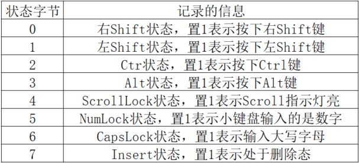

从0开始的汇编语言（十五）
前言
从0开始的汇编语言系列，选用的参考书籍是清华大学出版社，王爽老师的《汇编语言第四版》。该系列属于博主的笔记系列，文中会采用一些书中的例子，图片以及思考题供读者阅读，如需详细学习汇编语言可以购入一本，谢谢。
学习之前我们做如下约定（随着学习深入还会出现新的约定）：
- 十六进制数均以H结尾
- 使用8086CPU作为案例
- 我们使用(地址或寄存器名称)表示一个寄存器或一个内存单元的内容，()内地址是且一定是物理地址
- 我们将idata视作常量
- 我们以reg表示一个寄存器包括ax、ah、sp、bp、si、di等，sreg表示一个段寄存器包括ds、ss、cs、es。
话不多说我们马上开始。
外中断
我们知道CPU不仅仅只有运算功能，它还有I/O（Input/Output，输入/输出）能力，比如我们打开文本编辑器，按一下键盘，然后我们就可以看到屏幕出现了我们按下的按键，是CPU将从键盘上的键所对应的字符送到显示器上的。要及时处理外设的输入，显然需要解决两个问题：
- 外设的输入可能随时发生，CPU怎么知道呢？
- CPU从何处得到外设的输入？
这一篇我们就以键盘输入为例，讨论这两个问题。
接口芯片和端口
第14篇我们讲过，PC系统的接口卡和主板上，装有各种接口芯片。这些外设接口芯片内部有若干个寄存器，CPU将这些寄存器当做端口来访问。外设的输入不直接进入内存和CPU而是先进入相关的接口芯片的端口中；CPU向外设的输出也不是直接送入外设，而是先送入端口中，再由相关的芯片送到外设。CPU还可以向外设输出控制命令，而这些控制命令也是先送到相关芯片的端口中，然后再由相关的芯片根据命令对外设实施控制。可见，CPU通过端口和外部设备进行联系。
外中断信息
我们知道外设的输入被放到了端口里，那CPU如何及时的知道并处理呢？CPU提供中断机制来满足这种需求，前面说过，CPU内部有需要处理的事情发生的时候，将产生中断信息，引发中断过程。中断信息来自CPU内部。还有一种中断信息，来自于CPU外部，当CPU外部有需要处理的事情发生时，比如说外设的输入到达。这个时候相关芯片会向CPU发出相应的中断信息。CPU在执行完当前指令后，可以检测到发送过来的中断信息，引发中断过程，处理外设的输入。在PC系统中，外中断源一共分为一下两种。
可屏蔽中断
可屏蔽中断是CPU可以不响应的外中断。CPU是否响应可屏蔽中断，要看标志寄存器的IF位的设置。当CPU检测到可屏蔽中断信息时，如果IF=1，则CPU在执行完当前指令后响应中断，引发中断过程，如果IF=0,则不响应可屏蔽中断。
我们来回忆一下内中断所引发的中断过程：
- 取中断类型码N
- 标志寄存器入栈，IF=0，TF=0
- CS、IP入栈
- (IP)=(n×4)，(CS)=(n×4+2)
由此转去执行中断处理程序。
可屏蔽中断所引发的中断过程，除在第1步的是实现上有所不同外，基本上和内中断一样。因为可屏蔽中断信息来自于CPU外部，中断类型码是通过数据总线送入CPU的；而内中断的中断类型码是在CPU内部生成的。
现在我们就可以解释为什么中断过程中要设置IF为0了，因为在进入中断处理程序之后，禁止其他的可屏蔽中断。当然，如果在中断处理程序中需要处理可屏蔽中断，可以用指令将IF置为1。8086CPU提供了两条指令设置IF分别是：
- sti，设置IF=1
- cli，设置IF=0
不可屏蔽中断
不可屏蔽中断是CPU必须响应的外中断。当CPU检测到不可屏蔽中断信息时，则在执行完当前的指令后，立即响应，引发中断过程。对于8086CPU，不可屏蔽中断的中断过程类型码固定为2，所以中段过程中，不需要取中断类型码。所以不可屏蔽中断的中断过程为：
- 标志寄存器入栈，IF=0，TF=0
- CS、IP入栈
- (IP)=(8)，CS=(0AH)
几乎所有由外设引发的外中断，都是可屏蔽中断。当外设有需要处理的事件（比如说键盘输入）发生时，相关芯片向CPU发出可屏蔽中断信息。不可屏蔽中断是在系统中有必须处理的紧急情况发生时来通知CPU的中断信息。我们主要讨论可屏蔽信息。
PC机键盘的处理过程
我们接下来看一下键盘输入的处理过程，并以此来体会一下PC机处理外设输入的基本方法。
键盘输入
键盘上的每一个键就相当于一个开关，键盘中有一个芯片对键盘上的每一个键的开关状态进行扫描。按下一个键时，开关接通，该芯片就产生一个扫描码，扫描码说明了按下的键在键盘上的位置。扫描码被送入主板上的相关接口芯片的寄存器中，该寄存器的端口地址为60H。当我们松开这个键的时候，也产生一个扫描码，扫描码说明了松开的键在键盘上的位置。松开按键时产生的扫描码也会被送到端口60H中。
一般来说将按下一个键时产生的扫描码叫做通码，松开一个键时产生的扫描码叫做断码，扫描码的长度为一个字节，通码的第7位为0，断码的第7位为1，即断码=通码+80H。
引发9号中断
当键盘的输入到达60H端口时，相关的芯片就会向CPU发出中断类型码为9的可屏蔽中断信息。CPU检测到该中断信息后，如果IF=1，则响应中断，引发中断过程，转去执行int 9中断例程。
执行int 9中断例程
BIOS提供了int 9中断例程，用来进行基本的键盘输入处理，主要工作如下：
- 读出60H端口中的扫描码
- 如果是字符键的扫描码，将该扫描码和它所对应的字符码，也就是ASCII码送入内存中的BIOS键盘缓冲区；如果是控制键(比如Ctrl)和切换键(比如CapsLock)的扫描码，则将其转变为状态字节(用二进制位记录控制键和切换键状态的字节)写入内存中储存状态字节的单元。
- 对键盘系统进行相关的控制，比如说，向相关芯片发出应答信息。
BIOS键盘缓冲区是系统启动后，BIOS用于存放int 9中断例程所接收的键盘输入的内存区。该内存区可以储存15个键盘输入，因为int 9中断例程除了接收扫描码外，还要产生和扫描码对应的字符码，低位字节存放字符码。0040:17单元存储键盘状态字节，该字节记录了控制键和切换键的状态。键盘状态字节各位记录的信息如下：

安装新的int 9中断例程
接下来我们要安装一个新的int 9中断例程，使原来的int 9中断例程功能得到扩展。我们的任务是在DOS下，按F1键后改变当前屏幕的显示颜色，其他键照常处理。首先我们分别思考几个问题：
1.改变屏幕的显示颜色
改变从B800H开始的4000个字节中的所有奇地址单元中的内容，当前屏幕的显示颜色即发生改变。程序如下：
1 | mov ax,0B800H |
2.其他键照常处理
可以调用原int 9中断处理程序，来处理其他的键盘输入
3.原int 9中断例程入口地址的保存
因为在编写新的int 9中断例程中要调用原int 9中断例程，所以，要保存原int 9中断例程的入口地址。要保存在哪里？显然不能保存在安装程序中，因为安装程序返回后地址将丢失。我们将地址保存在0:200单元处。
4.新int 9中断例程的安装
我们可以将新的int 9中断例程安装在0:204处。
完整代码如下：
1 | assume cs:code |
这一篇我们通过对键盘输入的处理，讲解了CPU对外设输入的通常处理方法。即：
- 外设的输入送入端口
- 向CPU发出外中断(可屏蔽中断)信息
- CPU检测到可屏蔽中断信息，如果IF=1，CPU在执行完当前指令后响应中断，执行响应的中断处理程序
- 可在中断例程中实现对外设输入的处理
端口和中断机制，是CPU进行I/O的基础。
 wechat
wechat alipay
alipay